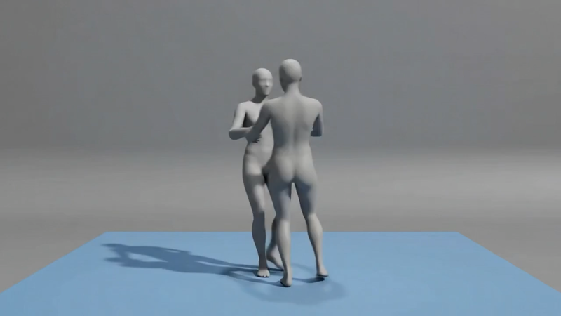
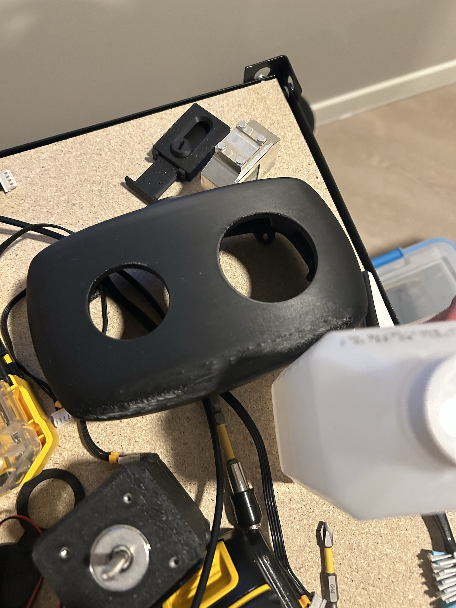
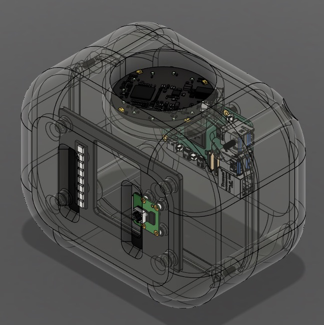

About section
Right now the header says "About" and the intro line under it just says "Cool Pictures" — a leftover placeholder, not a decision. Two small picks:
And a real intro line — one sentence, grounded in what's already on the page (Purdue CS '28, JPMorgan intern, MLT/Capital One fellow, Guatemala roots) so it doesn't read like generic filler:
Projects — bug
Reproduced the mid-swipe state on a 360px phone frame below. The badge is plain text with no backdrop, sitting flush at top-0 right-0 — so wherever it lands relative to the neighboring card's edge, it visually blends into whatever image is behind/next to it and reads as "cut off." Fix: pull it in slightly and give it its own solid pill background, so it's legible regardless of what's underneath, mid-swipe or not.
Before
Extended PCMDM
Undergraduate Researcher · Purdue · 2025–2026

badge text has no backdrop — blends into whatever's behind it
After
Extended PCMDM
Undergraduate Researcher · Purdue · 2025–2026
pill background + inset — always legible
Projects — layout
Right now the numbered index (01–04) sits above the carousel on mobile, but below it on desktop — and desktop navigation otherwise relies on arrow keys, which isn't obviously discoverable. Moving the index above the slide on desktop too makes it consistent with mobile and puts the click target in view immediately, arrow keys become a bonus shortcut instead of the only way in.
Before (desktop)
Extended PCMDM
— slide content —
↑ nav sits below, after you've already scrolled past it
After (desktop & mobile)
Extended PCMDM
— slide content —
Projects — narrative & captions
Drafted from what's already in the data (role/org/year/anchor/tags) plus what's visible in the photos — not embellished beyond that. You know the real story better than I do, so treat these as a starting point: comment on anything wrong or too generic and I'll rewrite it.
01 · Reachy Mini draft
"A Raspberry Pi 5-powered robot head — real-time perception (OpenCV, MediaPipe, PyTorch) behind a FastAPI server. Most of the build was killing cold-start latency: time-to-first-audio went from ~60 seconds down to under 2."

"The 3D-printed head shell and internals, mid-assembly." draft

"CAD model of the head — camera, compute board, and mounts." draft
Side note: reachy2.jpeg and reachy3.jpeg exist in public/projects/reachy/ but aren't wired into the carousel — want them added as a 3rd/4th photo?
02 · Extended PCMDM draft
"Extended an existing motion-diffusion model to generate two-person interactions instead of single-body motion, as an undergraduate researcher at Purdue. Pushed R-Precision Top-3 — how well the generated motion matches its text prompt — up 60% over the baseline."
"Two generated figures walking in sync from a text prompt." draft
03 · machine(learn) draft
"An agent that runs its own ML experiments — plans an approach, implements it, tunes hyperparameters, and writes up the results. Four phases with typed handoffs between them and automatic retries when implementation or tuning fails, orchestrated on Modal."
Diagram caption: "Plan → Implement → Tune → Report, with retries on the two middle phases." draft
04 · Price is Right Glasses draft
"An iOS app that guesses real-world prices from a photo. The FastAPI backend can call either Claude's or Gemini's vision models against the same prompt and schema, so the two providers are interchangeable and directly comparable."
You mentioned you'll source photos for this one yourself — narrative copy above is ready whenever, media stays as-is until then.